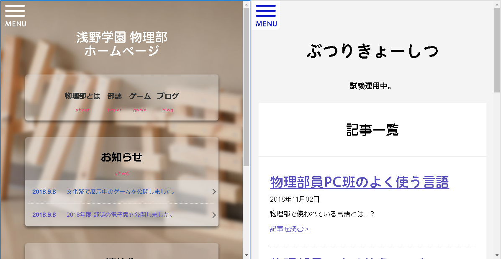
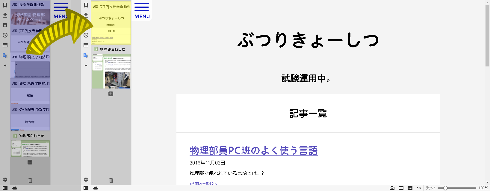

物理部員のよく使うブラウザ
今、あなたはこのページをどんなブラウザで見ていますか。
物理部員のほとんどがこだわりのブラウザを使っています。
では、そんな物理部員たちのブラウザを見ていきましょう。
※これには個人的な意見がまたまたとても多く含まれています。
また、もしかしたら間違った情報があるかもしれません。
目次
・Chromium系列
・その他
Chromium系列
Chromiumは、Googleが主体となって開発したオープンソースのブラウザで、Google Chromeなどの元になっています。
WEBページはHTMLという形式で文字・画像などの情報がまとめられ、
それをブラウザに搭載されているレンダリングエンジンが画面に描画します。
Chromium系列のブラウザでは、レンダリングエンジンにBlinkを採用しています。
Google Chrome
今世界で一番使われているブラウザです。
リリース当時の他のブラウザと比べて、ものすごく軽いブラウザだったので、今も大人気です。
とくにこだわりがない人はこれか、Windows10標準のMicrosoft Edgeがおすすめです。
Chromium
Chromeとほぼ同じです。
オープンソースで（くどい）インストールが不要です。
「Chromium使うならChromeでいいだろ」というのが物理部のブラウザマスターの意見です。
Chromiumという名前は金属のChrome（クロム）の元素名だと言う事です。
Opera
ノルウェーの会社が作ったブラウザです。（現在は中国の会社に買い取られてしまいました。）
Chromeよりも軽く、標準で広告ブロッカーがついています。
広告ブロッカーとは
WEBサイトの広告を表示させなくするものです。
スマホなどの場合、これを使うことによってデータ通信量が減ることがあります。
ただし、読み込みが遅くなる場合があるので注意です。
Vivaldi
Operaの開発者がOperaの開発後に作ったブラウザです。
広告ブロッカー機能はもちろん、ページキャプチャーなどの機能もあるので、おすすめです。
また、OperaはOperaの拡張機能しか入らなかったので「この拡張機能が入れられない！」という事がありました。
しかし、VivaldiはChromeの拡張機能がすべて入るので、主要な拡張機能をほとんど入れることができます。
また、標準でタブを管理する機能がついています。
例えば...

こんなことができたり...

Chromeより良いブラウザがいいという方にはお勧めです。
その他
FireFox
Mozilla Firefoxとも呼ばれます。
Chromeが出る以前にあったブラウザで、InternetExplorerでなければこれを使う、という感じでした。
豊富な拡張機能も魅力の一つです。
Microsoft Edge
Windows10にプリインストールされているブラウザです。
そこそこ軽いブラウザです。
でもできるならChromeなどを使ったほうがいいでしょう。
Safari
Appleが開発しているMacOS向けのブラウザです。
Windows向けもありますがあまりおすすめしません。
おわりに
結局、物理部員はVivaldiを推しているようですね。
...と、いうことでですね、以上です。
最後まで読んでいただきありがとうございました。